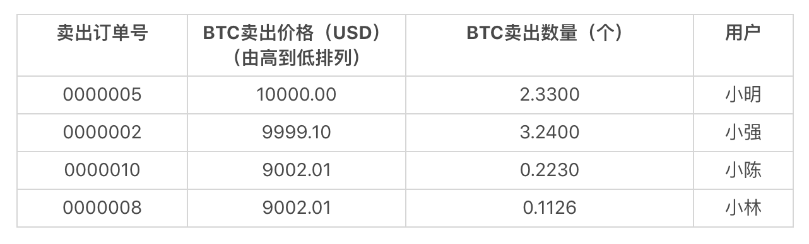
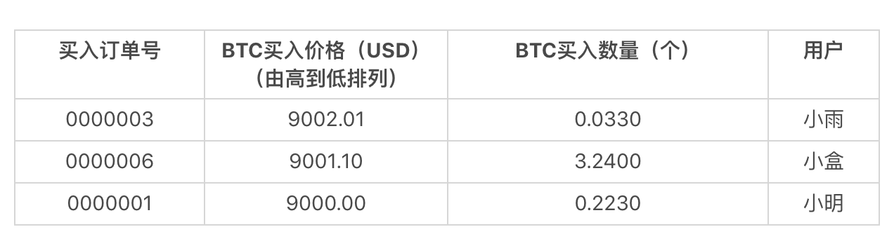
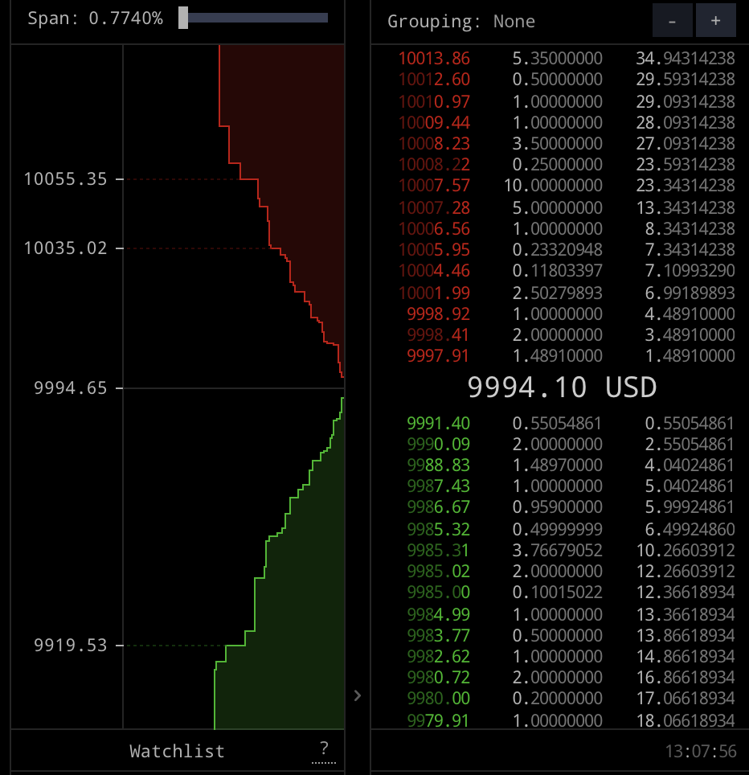
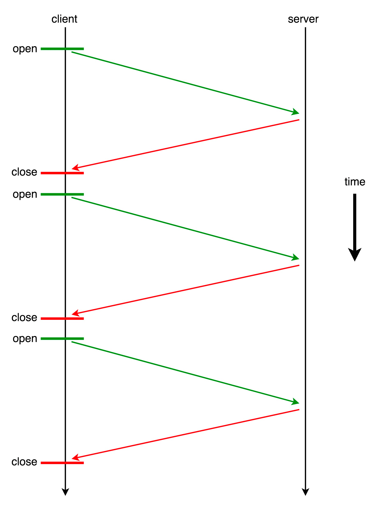
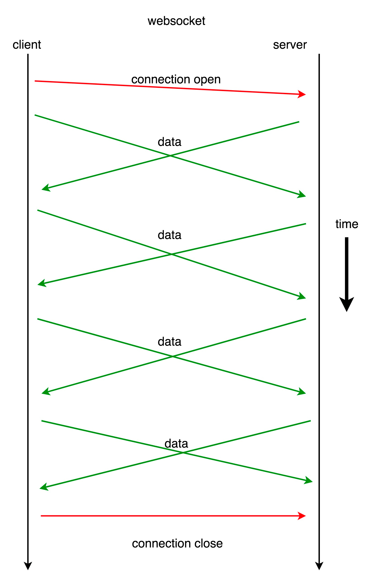

- 00 开篇词 从工程的角度深入理解Python.md.html
- 01 如何逐步突破，成为Python高手？.md.html
- 02 Jupyter Notebook为什么是现代Python的必学技术？.md.html
- 03 列表和元组，到底用哪一个？.md.html
- 04 字典、集合，你真的了解吗？.md.html
- 05 深入浅出字符串.md.html
- 06 Python “黑箱”：输入与输出.md.html
- 07 修炼基本功：条件与循环.md.html
- 08 异常处理：如何提高程序的稳定性？.md.html
- 09 不可或缺的自定义函数.md.html
- 10 简约不简单的匿名函数.md.html
- 11 面向对象（上）：从生活中的类比说起.md.html
- 12 面向对象（下）：如何实现一个搜索引擎？.md.html
- 13 搭建积木：Python 模块化.md.html
- 14 答疑（一）：列表和元组的内部实现是怎样的？.md.html
- 15 Python对象的比较、拷贝.md.html
- 16 值传递，引用传递or其他，Python里参数是如何传递的？.md.html
- 17 强大的装饰器.md.html
- 18 metaclass，是潘多拉魔盒还是阿拉丁神灯？.md.html
- 19 深入理解迭代器和生成器.md.html
- 20 揭秘 Python 协程.md.html
- 21 Python并发编程之Futures.md.html
- 22 并发编程之Asyncio.md.html
- 23 你真的懂Python GIL（全局解释器锁）吗？.md.html
- 24 带你解析 Python 垃圾回收机制.md.html
- 25 答疑（二）：GIL与多线程是什么关系呢？.md.html
- 26 活都来不及干了，还有空注意代码风格？！.md.html
- 27 学会合理分解代码，提高代码可读性.md.html
- 28 如何合理利用assert？.md.html
- 29 巧用上下文管理器和With语句精简代码.md.html
- 30 真的有必要写单元测试吗？.md.html
- 31 pdb & cProfile：调试和性能分析的法宝.md.html
- 32 答疑（三）：如何选择合适的异常处理方式？.md.html
- 33 带你初探量化世界.md.html
- 34 RESTful & Socket：搭建交易执行层核心.md.html
- 35 RESTful & Socket：行情数据对接和抓取.md.html
- 36 Pandas & Numpy：策略与回测系统.md.html
- 37 Kafka & ZMQ：自动化交易流水线.md.html
- 38 MySQL：日志和数据存储系统.md.html
- 39 Django：搭建监控平台.md.html
- 40 总结：Python中的数据结构与算法全景.md.html
- 41 硅谷一线互联网公司的工作体验.md.html
- 42 细数技术研发的注意事项.md.html
- 43 Q&A：聊一聊职业发展和选择.md.html
- 加餐 带你上手SWIG：一份清晰好用的SWIG编程实践指南.md.html
- 结束语 技术之外的几点成长建议.md.html
- 捐赠
35 RESTful & Socket：行情数据对接和抓取
你好，我是景霄。
上一节课，我们介绍了交易所的交易模式，数字货币交易所RESTful接口的常见概念，以及如何调用RESTful接口进行订单操作。众所周知，买卖操作的前提，是你需要已知市场的最新情况。这节课里，我将介绍交易系统底层另一个最重要的部分，行情数据的对接和抓取。
行情数据，最重要的是实时性和有效性。市场的情况瞬息万变，合适的买卖时间窗口可能只有几秒。在高频交易里，合适的买卖机会甚至在毫秒级别。要知道，一次从北京发往美国的网络请求，即使是光速传播，都需要几百毫秒的延迟。更别提用Python这种解释型语言，建立HTTP连接导致的时间消耗。
经过上节课的学习，你对交易应该有了基本的了解，这也是我们今天学习的基础。接下来，我们先从交易所撮合模式讲起，然后介绍行情数据有哪些；之后，我将带你基于Websocket的行情数据来抓取模块。
行情数据
回顾上一节我们提到的，交易所是一个买方、卖方之间的公开撮合平台。买卖方把需要/可提供的商品数量和愿意出/接受的价格提交给交易所，交易所按照公平原则进行撮合交易。
那么撮合交易是怎么进行的呢？假设你是一个人肉比特币交易所，大量的交易订单往你这里汇总，你应该如何选择才能让交易公平呢？
显然，最直观的操作就是，把买卖订单分成两个表，按照价格由高到低排列。下面的图，就是买入和卖出的委托表。


如果最高的买入价格小于最低的卖出价格，那就不会有任何交易发生。这通常是你看到的委托列表的常态。
如果最高的买入价格和最低的卖出价格相同，那么就尝试进行撮合。比如BTC在9002.01就会发生撮合，最后按照9002.01的价格，成交0.0330个BTC。当然，交易完成后，小林未完成部分的订单（余下0.1126 - 0.0330 = 0.0796 个 BTC 未卖出），还会继续在委托表里。
不过你可能会想，如果买入和卖出的价格有交叉，那么成交价格又是什么呢？事实上，这种情况并不会发生。我们来试想一下下面这样的场景。
如果你尝试给一个委托列表里加入一个新买入订单，它的价格比所有已有的最高买入价格高，也比所有的卖出价格高。那么此时，它会直接从最低的卖出价格撮合。等到最低价格的卖出订单吃完了，它便开始吃价格第二低的卖出订单，直到这个买入订单完全成交。反之亦然。所以，委托列表价格不会出现交叉。
当然，请注意，这里我说的只是限价订单的交易方式。而对于市价订单，交易规则会有一些轻微的区别，这里我就不详细解释了，主要是让你有个概念。
其实说到这里，所谓的“交易所行情”概念就呼之欲出了。交易所主要有两种行情数据：委托账本（Order Book）和活动行情（Tick data）。
我们把委托表里的具体用户隐去，相同价格的订单合并，就得到了下面这种委托账本。我们主要观察右边的数字部分，其中：
- 上半部分里，第一列红色数字代表BTC的卖出价格，中间一列数字是这个价格区间的订单BTC总量，最右边一栏是从最低卖出价格到当前价格区间的积累订单量。
- 中间的大字部分，9994.10 USD是当前的市场价格，也就是上一次成交交易的价格。
- 下面绿色部分的含义与上半部分类似，不过指的是买入委托和对应的数量。

Gemini的委托账本，来自https://cryptowat.ch
这张图中，最低的卖出价格比最高的买入价格要高 6.51 USD，这个价差通常被称为Spread。这里验证了我们前面提到的，委托账本的价格永不交叉； 同时，Spread很小也能说明这是一个非常活跃的交易所。
每一次撮合发生，意味着一笔交易（Trade）的发生。卖方买方都很开心，于是交易所也很开心地通知行情数据的订阅者：刚才发生了一笔交易，交易的价格是多少，成交数量是多少。这个数据就是活动行情Tick。
有了这些数据，我们也就掌握了这个交易所的当前状态，可以开始搞事情了。
Websocket介绍
在本文的开头我们提到过：行情数据很讲究时效性。所以，行情从交易所产生到传播给我们的程序之间的延迟，应该越低越好。通常，交易所也提供了REST的行情数据抓取接口。比如下面这段代码：
import requests
import timeit
def get_orderbook():
orderbook = requests.get("https://api.gemini.com/v1/book/btcusd").json()
n = 10
latency = timeit.timeit('get_orderbook()', setup='from __main__ import get_orderbook', number=n) * 1.0 / n
print('Latency is {} ms'.format(latency * 1000))
###### 输出 #######
Latency is 196.67642089999663 ms
我在美国纽约附近城市的一个服务器上测试了这段代码，你可以看到，平均每次访问orderbook的延迟有0.25秒左右。显然，如果在国内，这个延迟只会更大。按理说，这两个美国城市的距离很短，为什么延迟会这么大呢？
这是因为，REST接口本质上是一个HTTP接口，在这之下是TCP/TLS套接字（Socket）连接。每一次REST请求，通常都会重新建立一次TCP/TLS握手；然后，在请求结束之后，断开这个链接。这个过程，比我们想象的要慢很多。
举个例子来验证这一点，在同一个城市我们试验一下。我从纽约附近的服务器和Gemini在纽约的服务器进行连接，TCP/SSL握手花了多少时间呢？
curl -w "TCP handshake: %{time_connect}s, SSL handshake: %{time_appconnect}s\n" -so /dev/null https://www.gemini.com
TCP handshake: 0.072758s, SSL handshake: 0.119409s
结果显示，HTTP连接构建的过程，就占了一大半时间！也就是说，我们每次用REST请求，都要浪费一大半的时间在和服务器建立连接上，这显然是非常低效的。很自然的你会想到，我们能否实现一次连接、多次通信呢？
事实上，Python的某些HTTP请求库，也可以支持重用底层的TCP/SSL连接。但那种方法，一来比较复杂，二来也需要服务器的支持。该怎么办呢？其实，在有WebSocket的情况下，我们完全不需要舍近求远。
我先来介绍一下WebSocket。WebSocket是一种在单个TCP/TLS连接上，进行全双工、双向通信的协议。WebSocket可以让客户端与服务器之间的数据交换变得更加简单高效，服务端也可以主动向客户端推送数据。在WebSocket API中，浏览器和服务器只需要完成一次握手，两者之间就可以直接创建持久性的连接，并进行双向数据传输。
概念听着很痛快，不过还是有些抽象。为了让你快速理解刚刚的这段话，我们还是来看两个简单的例子。二话不说，先看一段代码：
import websocket
import thread
# 在接收到服务器发送消息时调用
def on_message(ws, message):
print('Received: ' + message)
# 在和服务器建立完成连接时调用
def on_open(ws):
# 线程运行函数
def gao():
# 往服务器依次发送0-4，每次发送完休息0.01秒
for i in range(5):
time.sleep(0.01)
msg="{0}".format(i)
ws.send(msg)
print('Sent: ' + msg)
# 休息1秒用于接收服务器回复的消息
time.sleep(1)
# 关闭Websocket的连接
ws.close()
print("Websocket closed")
# 在另一个线程运行gao()函数
thread.start_new_thread(gao, ())
if __name__ == "__main__":
ws = websocket.WebSocketApp("ws://echo.websocket.org/",
on_message = on_message,
on_open = on_open)
ws.run_forever()
#### 输出 #####
Sent: 0
Sent: 1
Received: 0
Sent: 2
Received: 1
Sent: 3
Received: 2
Sent: 4
Received: 3
Received: 4
Websocket closed
这段代码尝试和wss://echo.websocket.org建立连接。当连接建立的时候，就会启动一条线程，连续向服务器发送5条消息。
通过输出可以看出，我们在连续发送的同时，也在不断地接受消息。这并没有像REST一样，每发送一个请求，要等待服务器完成请求、完全回复之后，再进行下一个请求。换句话说，我们在请求的同时也在接受消息，这也就是前面所说的”全双工“。

REST（HTTP）单工请求响应的示意图

Websocket全双工请求响应的示意图
再来看第二段代码。为了解释”双向“，我们来看看获取Gemini的委托账单的例子。
import ssl
import websocket
import json
# 全局计数器
count = 5
def on_message(ws, message):
global count
print(message)
count -= 1
# 接收了5次消息之后关闭websocket连接
if count == 0:
ws.close()
if __name__ == "__main__":
ws = websocket.WebSocketApp(
"wss://api.gemini.com/v1/marketdata/btcusd?top_of_book=true&offers=true",
on_message=on_message)
ws.run_forever(sslopt={"cert_reqs": ssl.CERT_NONE})
###### 输出 #######
{"type":"update","eventId":7275473603,"socket_sequence":0,"events":[{"type":"change","reason":"initial","price":"11386.12","delta":"1.307","remaining":"1.307","side":"ask"}]}
{"type":"update","eventId":7275475120,"timestamp":1562380981,"timestampms":1562380981991,"socket_sequence":1,"events":[{"type":"change","side":"ask","price":"11386.62","remaining":"1","reason":"top-of-book"}]}
{"type":"update","eventId":7275475271,"timestamp":1562380982,"timestampms":1562380982387,"socket_sequence":2,"events":[{"type":"change","side":"ask","price":"11386.12","remaining":"1.3148","reason":"top-of-book"}]}
{"type":"update","eventId":7275475838,"timestamp":1562380986,"timestampms":1562380986270,"socket_sequence":3,"events":[{"type":"change","side":"ask","price":"11387.16","remaining":"0.072949","reason":"top-of-book"}]}
{"type":"update","eventId":7275475935,"timestamp":1562380986,"timestampms":1562380986767,"socket_sequence":4,"events":[{"type":"change","side":"ask","price":"11389.22","remaining":"0.06204196","reason":"top-of-book"}]}
可以看到，在和Gemini建立连接后，我们并没有向服务器发送任何消息，没有任何请求，但是服务器却源源不断地向我们推送数据。这可比REST接口“每请求一次获得一次回复”的沟通方式高效多了！
因此，相对于REST来说，Websocket是一种更加实时、高效的数据交换方式。当然缺点也很明显：因为请求和回复是异步的，这让我们程序的状态控制逻辑更加复杂。这一点，后面的内容里我们会有更深刻的体会。
行情抓取模块
有了 Websocket 的基本概念，我们就掌握了和交易所连接的第二种方式。
事实上，Gemini 提供了两种 Websocket 接口，一种是 Public 接口，一种为 Private 接口。
Public 接口，即公开接口，提供 orderbook 服务，即每个人都能看到的当前挂单价和深度，也就是我们这节课刚刚详细讲过的 orderbook。
而 Private 接口，和我们上节课讲的挂单操作有关，订单被完全执行、被部分执行等等其他变动，你都会得到通知。
我们以 orderbook 爬虫为例，先来看下如何抓取 orderbook 信息。下面的代码详细写了一个典型的爬虫，同时使用了类进行封装，希望你不要忘记我们这门课的目的，了解 Python 是如何应用于工程实践中的：
import copy
import json
import ssl
import time
import websocket
class OrderBook(object):
BIDS = 'bid'
ASKS = 'ask'
def __init__(self, limit=20):
self.limit = limit
# (price, amount)
self.bids = {}
self.asks = {}
self.bids_sorted = []
self.asks_sorted = []
def insert(self, price, amount, direction):
if direction == self.BIDS:
if amount == 0:
if price in self.bids:
del self.bids[price]
else:
self.bids[price] = amount
elif direction == self.ASKS:
if amount == 0:
if price in self.asks:
del self.asks[price]
else:
self.asks[price] = amount
else:
print('WARNING: unknown direction {}'.format(direction))
def sort_and_truncate(self):
# sort
self.bids_sorted = sorted([(price, amount) for price, amount in self.bids.items()], reverse=True)
self.asks_sorted = sorted([(price, amount) for price, amount in self.asks.items()])
# truncate
self.bids_sorted = self.bids_sorted[:self.limit]
self.asks_sorted = self.asks_sorted[:self.limit]
# copy back to bids and asks
self.bids = dict(self.bids_sorted)
self.asks = dict(self.asks_sorted)
def get_copy_of_bids_and_asks(self):
return copy.deepcopy(self.bids_sorted), copy.deepcopy(self.asks_sorted)
class Crawler:
def __init__(self, symbol, output_file):
self.orderbook = OrderBook(limit=10)
self.output_file = output_file
self.ws = websocket.WebSocketApp('wss://api.gemini.com/v1/marketdata/{}'.format(symbol),
on_message = lambda ws, message: self.on_message(message))
self.ws.run_forever(sslopt={'cert_reqs': ssl.CERT_NONE})
def on_message(self, message):
# 对收到的信息进行处理，然后送给 orderbook
data = json.loads(message)
for event in data['events']:
price, amount, direction = float(event['price']), float(event['remaining']), event['side']
self.orderbook.insert(price, amount, direction)
# 整理 orderbook，排序，只选取我们需要的前几个
self.orderbook.sort_and_truncate()
# 输出到文件
with open(self.output_file, 'a+') as f:
bids, asks = self.orderbook.get_copy_of_bids_and_asks()
output = {
'bids': bids,
'asks': asks,
'ts': int(time.time() * 1000)
}
f.write(json.dumps(output) + '\n')
if __name__ == '__main__':
crawler = Crawler(symbol='BTCUSD', output_file='BTCUSD.txt')
###### 输出 #######
{"bids": [[11398.73, 0.96304843], [11398.72, 0.98914437], [11397.32, 1.0], [11396.13, 2.0], [11395.95, 2.0], [11395.87, 1.0], [11394.09, 0.11803397], [11394.08, 1.0], [11393.59, 0.1612581], [11392.96, 1.0]], "asks": [[11407.42, 1.30814001], [11407.92, 1.0], [11409.48, 2.0], [11409.66, 2.0], [11412.15, 0.525], [11412.42, 1.0], [11413.77, 0.11803397], [11413.99, 0.5], [11414.28, 1.0], [11414.72, 1.0]], "ts": 1562558996535}
{"bids": [[11398.73, 0.96304843], [11398.72, 0.98914437], [11397.32, 1.0], [11396.13, 2.0], [11395.95, 2.0], [11395.87, 1.0], [11394.09, 0.11803397], [11394.08, 1.0], [11393.59, 0.1612581], [11392.96, 1.0]], "asks": [[11407.42, 1.30814001], [11407.92, 1.0], [11409.48, 2.0], [11409.66, 2.0], [11412.15, 0.525], [11412.42, 1.0], [11413.77, 0.11803397], [11413.99, 0.5], [11414.28, 1.0], [11414.72, 1.0]], "ts": 1562558997377}
{"bids": [[11398.73, 0.96304843], [11398.72, 0.98914437], [11397.32, 1.0], [11396.13, 2.0], [11395.95, 2.0], [11395.87, 1.0], [11394.09, 0.11803397], [11394.08, 1.0], [11393.59, 0.1612581], [11392.96, 1.0]], "asks": [[11407.42, 1.30814001], [11409.48, 2.0], [11409.66, 2.0], [11412.15, 0.525], [11412.42, 1.0], [11413.77, 0.11803397], [11413.99, 0.5], [11414.28, 1.0], [11414.72, 1.0]], "ts": 1562558997765}
{"bids": [[11398.73, 0.96304843], [11398.72, 0.98914437], [11397.32, 1.0], [11396.13, 2.0], [11395.95, 2.0], [11395.87, 1.0], [11394.09, 0.11803397], [11394.08, 1.0], [11393.59, 0.1612581], [11392.96, 1.0]], "asks": [[11407.42, 1.30814001], [11409.48, 2.0], [11409.66, 2.0], [11412.15, 0.525], [11413.77, 0.11803397], [11413.99, 0.5], [11414.28, 1.0], [11414.72, 1.0]], "ts": 1562558998638}
{"bids": [[11398.73, 0.97131753], [11398.72, 0.98914437], [11397.32, 1.0], [11396.13, 2.0], [11395.95, 2.0], [11395.87, 1.0], [11394.09, 0.11803397], [11394.08, 1.0], [11393.59, 0.1612581], [11392.96, 1.0]], "asks": [[11407.42, 1.30814001], [11409.48, 2.0], [11409.66, 2.0], [11412.15, 0.525], [11413.77, 0.11803397], [11413.99, 0.5], [11414.28, 1.0], [11414.72, 1.0]], "ts": 1562558998645}
{"bids": [[11398.73, 0.97131753], [11398.72, 0.98914437], [11397.32, 1.0], [11396.13, 2.0], [11395.87, 1.0], [11394.09, 0.11803397], [11394.08, 1.0], [11393.59, 0.1612581], [11392.96, 1.0]], "asks": [[11407.42, 1.30814001], [11409.48, 2.0], [11409.66, 2.0], [11412.15, 0.525], [11413.77, 0.11803397], [11413.99, 0.5], [11414.28, 1.0], [11414.72, 1.0]], "ts": 1562558998748}
代码比较长，接下来我们具体解释一下。
这段代码的最开始，封装了一个叫做 orderbook 的 class，专门用来存放与之相关的数据结构。其中的 bids 和 asks 两个字典，用来存储当前时刻下的买方挂单和卖方挂单。
此外，我们还专门维护了一个排过序的 bids_sorted 和 asks_sorted。构造函数有一个参数 limit，用来指示 orderbook 的 bids 和 asks 保留多少条数据。对于很多策略，top 5 的数据往往足够，这里我们选择的是前 10 个。
再往下看，insert() 函数用于向 orderbook 插入一条数据。需要注意，这里的逻辑是，如果某个 price 对应的 amount 是 0，那么意味着这一条数据已经不存在了，删除即可。insert 的数据可能是乱序的，因此在需要的时候，我们要对 bids 和 asks 进行排序，然后选取前面指定数量的数据。这其实就是 sort_and_truncate() 函数的作用，调用它来对 bids 和 asks 排序后截取，最后保存回 bids 和 asks。
接下来的 get_copy_of_bids_and_asks()函数，用来返回排过序的 bids 和 asks 数组。这里使用深拷贝，是因为如果直接返回，将会返回 bids_sorted 和 asks_sorted 的指针；那么，在下一次调用 sort_and_truncate() 函数的时候，两个数组的内容将会被改变，这就造成了潜在的 bug。
最后来看一下 Crawler 类。构造函数声明 orderbook，然后定义 Websocket 用来接收交易所数据。这里需要注意的一点是，回调函数 on_message() 是一个类成员函数。因此，应该你注意到了，它的第一个参数是 self，这里如果直接写成 on_message = self.on_message 将会出错。
为了避免这个问题，我们需要将函数再次包装一下。这里我使用了前面学过的匿名函数，来传递中间状态，注意我们只需要 message，因此传入 message 即可。
剩下的部分就很清晰了，on_message 回调函数在收到一个新的 tick 时，先将信息解码，枚举收到的所有改变；然后插入 orderbook，排序；最后连同 timestamp 一并输出即可。
虽然这段代码看起来挺长，但是经过我这么一分解，是不是发现都是学过的知识点呢？这也是我一再强调基础的原因，如果对你来说哪部分内容变得陌生了（比如面向对象编程的知识点），一定要记得及时往前复习，这样你学起新的更复杂的东西，才能轻松很多。
回到正题。刚刚的代码，主要是为了抓取 orderbook 的信息。事实上，Gemini 交易所在建立数据流 Websocket 的时候，第一条信息往往非常大，因为里面包含了那个时刻所有的 orderbook 信息。这就叫做初始数据。之后的消息，都是基于初始数据进行修改的，直接处理即可。
总结
这节课我们继承上一节，从委托账本讲起，然后讲述了 WebSocket 的定义、工作机制和使用方法，最后以一个例子收尾，带你学会如何爬取 Orderbook 的信息。希望你在学习这节课的内容时，能够和上节课的内容联系起来，仔细思考 Websocket 和 RESTFul 的区别，并试着总结网络编程中不同模型的适用范围。
思考题
最后给你留一道思考题。WebSocket 会丢包吗？如果丢包的话， Orderbook 爬虫又会发生什么？这一点应该如何避免呢？欢迎留言和我讨论，也欢迎你把这篇文章分享出去。
© 2019 - 2023 Liangliang Lee. Powered by gin and hexo-theme-book.